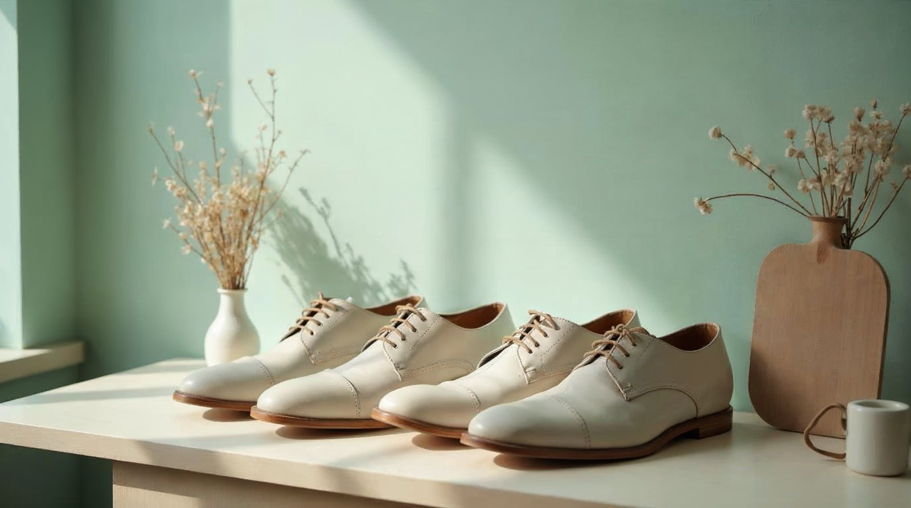
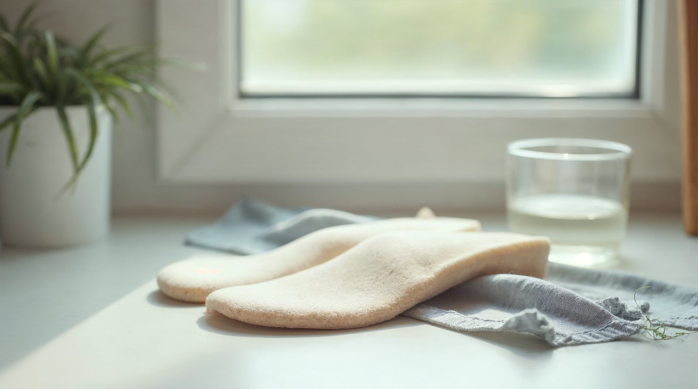
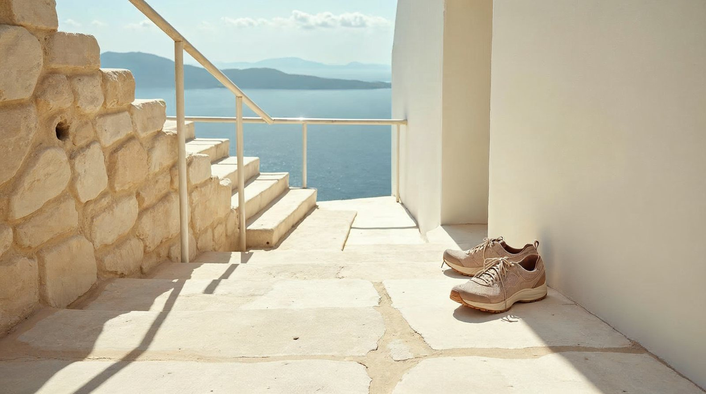
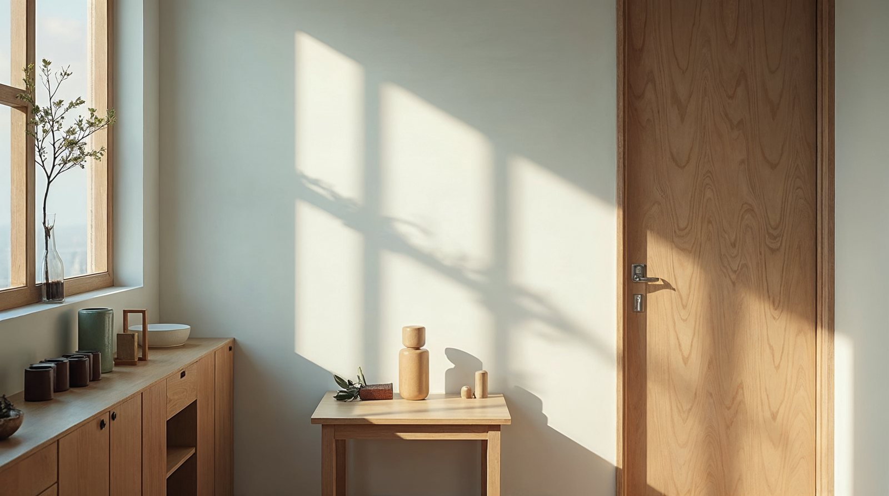

이종호 한의사 감수좋은꿈참사랑한의원 대표원장 (한의사 면허번호 19769)발행 2026-11-26 · 수정 2026-11-26
이 글의 차례
퇴근길 지하철 계단을 내려오는데 엄지발가락 안쪽이 신발에 쓸려 화끈거립니다. 아침엔 괜찮던 구두가 오후만 되면 발을 조여 옵니다. 집에 와 신발을 벗으면 튀어나온 뼈 위가 빨갛게 달아올라 있습니다. 예쁜 신발은 신발장 안쪽으로 밀려난 지 오래입니다.
진료실에서 이런 말씀을 자주 듣습니다. "어머니 발도 이랬는데 저도 닮아 가나 봐요." "발 모양이 보기 싫어서 여름에 샌들을 못 신어요." 아픔도 아픔이지만, 발을 감추고 지내야 하는 마음이 더 무겁다는 분이 많습니다. 그 마음도 충분히 이해합니다.
엄지발가락이 둘째발가락 쪽으로 휘고, 그만큼 엄지발가락 뿌리 쪽 뼈가 안쪽으로 튀어나오는 것을 무지외반이라고 부릅니다. 튀어나온 곳이 신발에 쓸리며 붓고 아프고, 휜 정도가 심해지면 발바닥 앞쪽까지 아파지기도 합니다.
무지외반은 하루아침에 생기지 않습니다. 타고난 발 모양 위에 신발과 걸음, 서 있는 시간이 오래 쌓여 만들어집니다. 이 글에서는 왜 휘는지, 비슷한 다른 발 통증과 어떻게 다른지, 일상과 진료실에서 무엇을 함께 살필 수 있는지 차근차근 적어 보겠습니다.
왜 엄지발가락이 휠까요
엄지발가락은 걸을 때 마지막으로 땅을 밀어내는 곳입니다. 한 걸음마다 몸무게가 발뒤꿈치에서 발 바깥쪽을 지나 엄지발가락으로 넘어갑니다. 이 마지막 밀기가 곧게 이루어지지 않고 비스듬히 반복되면 엄지발가락이 조금씩 바깥으로 밀려납니다.
앞코가 좁고 굽이 높은 신발은 이 과정을 재촉합니다. 굽이 높을수록 몸무게가 발 앞쪽으로 쏠리고, 좁은 앞코가 엄지발가락을 둘째발가락 쪽으로 밀어 넣습니다. 그래서 굽 있는 구두를 오래 신은 분께 더 흔하다고 알려져 있습니다.
타고난 발 모양도 큰 몫을 합니다. 가족 가운데 무지외반이 있는 분이 많고, 발의 아치가 낮아 안쪽으로 무너지는 평발 경향이 있으면 엄지발가락 쪽으로 힘이 더 실립니다. 관절이 유연한 체질, 류마티스 관절염 같은 질환도 영향을 줍니다.
엄지발가락이 휘면 그 뿌리의 뼈가 안쪽으로 밀려 나오고, 그 위를 덮은 작은 주머니(점액낭)가 신발에 쓸리며 붓습니다. 아픈 곳은 대개 이 튀어나온 자리입니다. 휜 정도가 커지면 엄지발가락이 제 몫을 못 하고, 그 무게를 둘째·셋째 발가락 아래가 대신 받으며 발바닥 앞쪽에 굳은살과 통증이 생깁니다.
한의학에서는 발을 몸의 뿌리로 보았고, 오래 서서 지친 다리를 기혈이 아래로 몰리고 흐름이 막힌 모습으로 설명해 왔습니다. 저는 이 말을 발 하나만이 아니라 다리 전체와 하루의 서 있는 시간을 함께 보자는 뜻으로 받아들입니다.
통풍, 엄지발가락 관절염, 지간신경종과는 어떻게 다를까요
엄지발가락 뿌리가 아프다고 모두 무지외반은 아닙니다. 아픈 모습과 시작된 속도를 나눠 보면 방향이 잡힙니다.
통풍은 대개 하룻밤 사이에 시작됩니다. 자고 일어났더니 엄지발가락 뿌리가 빨갛게 부어 이불만 스쳐도 아플 정도라면 통풍을 먼저 떠올립니다. 무지외반의 통증은 이보다 천천히, 신발을 신고 걸을수록 커지는 모습입니다.
엄지발가락 관절 자체가 닳는 관절염은 엄지발가락이 위로 잘 젖혀지지 않고, 관절 위쪽에 뼈가 덧자라 딱딱하게 만져지는 경우가 많습니다. 걸을 때 발끝으로 밀어내는 순간이 특히 아픕니다. 무지외반과 함께 오기도 합니다.
셋째와 넷째 발가락 사이 발바닥이 찌릿하고 타는 듯하며, 신발을 벗고 발을 주무르면 덜해진다면 지간신경종을 떠올립니다. 좁은 신발이 원인이 되는 점은 비슷하지만 아픈 자리가 다릅니다.
발뒤꿈치 아래가 아침 첫걸음에 아프다면 족저근막 쪽 문제일 수 있습니다. 무지외반이 있는 분은 걸음이 바뀌면서 다른 곳에 통증이 함께 오기도 해, 진료실에서는 발 전체를 함께 봅니다.

예를 들면 이런 모습입니다
실제 어느 분의 사연이 아니라, 진료실에서 자주 보는 모습을 바탕으로 그려 본 장면입니다.
예를 들어 하루 종일 서서 일하며 앞코가 좁은 구두를 신어야 하는 분이라면, 오후가 될수록 엄지발가락 안쪽이 달아오른다고 하십니다. 일하는 신발을 당장 바꾸기 어렵다면 출퇴근길과 쉬는 시간만이라도 편한 신발로 갈아 신는 것부터 시작합니다.
걷기 운동을 열심히 하는 어르신이라면 운동화를 신는데도 아프다고 하십니다. 신발을 보면 앞코가 생각보다 좁거나, 발 크기가 변했는데 예전 치수를 그대로 신는 경우가 많습니다. 나이가 들면 발이 조금 넓어지고 길어지기도 합니다.
발 모양 때문에 수술을 고민하는 분이라면 아픔과 모양 가운데 무엇이 더 큰 이유인지부터 함께 정리합니다. 모양만을 이유로 결정하기보다 통증과 생활의 불편을 함께 놓고 정형외과에서 상의하시길 권합니다.
스스로 살펴보는 질문
아래는 진단표가 아니라 내 발을 진료실에서 설명하기 위한 질문입니다.
- 엄지발가락이 둘째발가락 쪽으로 휘어 있고, 뿌리 안쪽이 튀어나와 있다
- 튀어나온 곳이 신발에 쓸려 붉어지거나 붓는다
- 둘째·셋째 발가락 아래 발바닥에 굳은살이 생기고 아프다
- 오래 서 있거나 걸은 날 저녁에 더 아프다
- 신발 안쪽이 볼록하게 늘어나 있다
- 가족 가운데 비슷한 발 모양을 가진 분이 있다
맨발로 서서 위에서 내려다본 발 사진을 한 장 찍어 두시면 좋습니다. 몇 달 뒤 같은 자세로 다시 찍어 보면 휜 정도가 변하는지 스스로 비교해 볼 수 있습니다.
먼저 이렇게 여쭙니다
발은 신발과 하루의 걸음을 그대로 닮아 있습니다. 처음 오시면 이런 것들을 여쭙니다.
- 아픈 자리(튀어나온 곳, 발바닥 앞쪽, 발가락 사이)와 시작된 때
- 하루에 서 있거나 걷는 시간, 일할 때 신는 신발
- 가장 자주 신는 신발 두세 켤레(신고 오시거나 사진으로)
- 아픈 날의 공통점(오래 걸은 날, 특정 신발을 신은 날)
- 당뇨, 통풍, 류마티스 관절염 진단과 드시는 약
- 정형외과에서 받은 엑스레이와 들은 설명
당뇨가 있는 분은 발의 감각이 둔해 쓸린 상처를 늦게 알아채는 경우가 있습니다. 그래서 발 피부와 상처가 있는지도 함께 살펴봅니다.

일상에서 먼저 해 볼 수 있는 것
무지외반의 통증은 신발과 깊이 연결되어 있어, 신발부터 살펴보는 것이 첫걸음입니다.
- 앞코가 넓고 발가락이 자유롭게 움직이는 신발을 고릅니다
- 굽은 3cm 안쪽으로 낮추고, 굽 있는 신발은 꼭 필요한 시간에만 신습니다
- 신발은 발이 조금 부은 오후에 직접 신어 보고 고릅니다
- 튀어나온 곳이 쓸리면 실리콘 보호대를 대어 마찰을 줄입니다
발가락 사이에 끼우는 교정기나 깔창은 통증을 덜어 주는 데 쓰이기도 합니다. 다만 이미 휜 뼈를 되돌리기보다 마찰과 부담을 줄이는 도구라고 생각해 주세요. 맞지 않는 도구는 오히려 다른 곳을 아프게 할 수 있어 크기와 모양을 상의해 고르시길 권합니다.
발가락과 발바닥 근육을 깨우는 운동도 도움이 될 수 있습니다. 맨발로 앉아 발가락을 쫙 벌렸다 오므리기, 수건을 바닥에 깔고 발가락으로 끌어당기기, 엄지발가락만 따로 들어 올렸다 내리기를 하루 몇 번 해 보세요.
종아리가 굳어 있으면 걸을 때 발 앞쪽에 무게가 더 실립니다. 벽을 짚고 한 발을 뒤로 빼 종아리를 늘이는 동작을 30초씩, 하루 두세 번 해 주세요. 오래 서 있는 날 저녁에는 발을 미지근한 물에 담그고 발바닥을 손으로 주물러 주시면 좋습니다.
발과 다리, 허리는 하나로 이어져 있습니다
엄지발가락이 아프면 사람은 자기도 모르게 발 바깥쪽으로 걷습니다. 그렇게 몇 달을 지내면 발목 바깥쪽, 무릎, 엉덩이, 허리까지 부담이 옮겨 갑니다. 발이 아파 오신 분 가운데 무릎이나 허리도 함께 불편하다는 분이 많은 이유입니다.
그래서 저는 발만 보지 않고 걸음을 함께 봅니다. 진료실 복도를 몇 걸음 걸어 보시게 하고, 발이 바닥에 닿는 순서와 무릎이 향하는 방향, 골반의 흔들림을 살핍니다. 발에서 시작된 이야기가 허리에서 끝나는 경우도 적지 않습니다.
발의 아치가 낮아 안쪽으로 무너지는 분은 발목과 무릎이 함께 안쪽으로 돌아가기 쉽습니다. 이럴 때는 발바닥 근육과 엉덩이 옆 근육을 함께 깨우는 운동이 걸음 전체를 바로잡는 데 도움이 될 수 있습니다.

언덕과 계단이 많은 동네에서 걸을 때
상도동처럼 언덕과 계단이 많은 동네에서는 발 앞쪽이 더 바쁩니다. 오르막에서는 발끝으로 밀어 올리느라 엄지발가락에 힘이 몰리고, 내리막에서는 발이 신발 앞쪽으로 미끄러져 튀어나온 곳이 더 쓸립니다.
내리막을 걸을 때는 신발 끈을 조금 더 단단히 매어 발이 앞으로 밀리지 않게 해 보세요. 보폭을 줄이고 발 전체로 디디면 엄지발가락 쪽 부담이 덜합니다. 오르막에서는 서두르지 말고 숨이 편한 속도로 천천히 오릅니다.
장을 보거나 무거운 짐을 들고 오르내리는 날은 발이 더 지칩니다. 짐은 바퀴 달린 장바구니에 나눠 담고, 그날 저녁에는 발을 미지근한 물에 담가 쉬게 해 주세요.

한의원에서 함께 살필 수 있는 경우
무지외반은 휜 정도와 통증에 따라 신발과 생활 조정, 보조기, 수술까지 여러 선택지가 있습니다. 그 사이에서 한의원이 함께 살필 수 있는 경우는 이렇습니다.
- 튀어나온 곳의 통증과 붓기, 발바닥 앞쪽 통증이 주된 경우
- 발이 아파 걸음이 바뀌며 종아리·무릎·허리까지 뻐근해진 경우
- 오래 서서 일해 다리가 붓고 무거우며 발이 늘 지쳐 있는 경우
- 정형외과에서 지켜보자는 말을 듣고 생활 관리를 함께 정하고 싶은 경우
좋은꿈참사랑한의원에 처음 오시면 아래 신호가 있는지 먼저 여쭙고, 받으신 검사가 있는지 확인합니다. 휜 정도가 크고 통증이 심해 일상이 어렵다면 정형외과 상담을 함께 권해 드립니다.
그다음 양손을 올려 달라고 말씀드립니다. 저는 처음 오신 분이든 다시 오신 분이든 모든 분께 맥을 짚습니다. 맥과 함께 발의 모양과 아치, 아픈 자리, 종아리와 허리의 긴장, 걸음을 살핍니다.
필요하면 초음파로 튀어나온 곳 주변의 붓기와 힘줄을 함께 봅니다. 이렇게 살핀 내용을 바탕으로 침, 체외충격파, 온열 치료, 신발과 운동 계획처럼 함께 할 수 있는 것을 정합니다. 결과를 미리 약속드리기보다 다음 진료에서 통증과 걸은 시간이 어땠는지 함께 보며 조정합니다.
이렇게 기록해 오시면 상담이 쉬워집니다
발 통증은 신발과 하루의 걸음에 따라 크게 달라집니다. 2주만 짧게 적어 와 주세요.
- 그날 신은 신발과 신고 있던 시간
- 서 있거나 걸은 시간
- 저녁 무렵 통증 크기(0~10)와 붓기, 붉어짐
- 아픈 자리(튀어나온 곳, 발바닥 앞쪽, 그 밖의 곳)
가장 자주 신는 신발을 한 켤레 신고 오시거나, 밑창 사진을 찍어 오시면 큰 도움이 됩니다. 밑창의 닳은 자리가 걸음의 습관을 가장 솔직하게 보여 주기 때문입니다.
발을 감추고 지내 온 시간이 길었을지도 모르겠습니다. 오늘은 신발장 앞에서 내 발에 편한 신발 한 켤레를 골라 보는 것부터 시작해 보세요. 다음에 오시면 2주 동안 신은 신발 이야기부터 함께 나누겠습니다.
이런 증상은 먼저 확인이 필요합니다
- 엄지발가락 뿌리가 하룻밤 사이 빨갛게 부어 스치기만 해도 아프거나 열이 나는 경우
- 당뇨가 있는데 발에 상처·물집이 생겨 붓고 진물이 나거나 낫지 않는 경우
이런 신호가 있으면 한의원보다 가까운 병원이나 응급실을 먼저 찾으세요.
함께 읽으면 좋은 글
- 발바닥 통증은 어떤 종류가 있고 어떻게 구분해서 살피나요?
- 동네 공원 걷기를 새로 시작했는데 발바닥이 아플 때는 어떻게 살피나요?
- 발목을 자주 접질리는 반복 발목 염좌와 발목 불안정은 어떻게 살피나요?
- 계단에서 시큰하고 자주 붓는 무릎 퇴행성 관절염은 어떻게 살피나요?

여쭙는 것
- 아픈 자리(튀어나온 곳, 발바닥 앞쪽, 발가락 사이)와 시작된 때
- 하루에 서 있거나 걷는 시간, 일할 때 신는 신발
- 가장 자주 신는 신발 두세 켤레(신고 오시거나 사진으로)
생활에서 해 볼 것
- 앞코가 넓고 발가락이 자유롭게 움직이는 신발을 고릅니다
- 굽은 3cm 안쪽으로 낮추고, 굽 있는 신발은 꼭 필요한 시간에만 신습니다
- 신발은 발이 조금 부은 오후에 직접 신어 보고 고릅니다
한의원에서 함께 살필 것
- 튀어나온 곳의 통증과 붓기, 발바닥 앞쪽 통증이 주된 경우
- 발이 아파 걸음이 바뀌며 종아리·무릎·허리까지 뻐근해진 경우
- 오래 서서 일해 다리가 붓고 무거우며 발이 늘 지쳐 있는 경우
먼저 확인이 필요한 신호
- 엄지발가락 뿌리가 하룻밤 사이 빨갛게 부어 스치기만 해도 아프거나 열이 나는 경우
- 당뇨가 있는데 발에 상처·물집이 생겨 붓고 진물이 나거나 낫지 않는 경우
한눈에 보는 표
| 구분 | 핵심 |
|---|---|
| 여쭙는 것 | 아픈 자리(튀어나온 곳, 발바닥 앞쪽, 발가락 사이)와 시작된 때 하루에 서 있거나 걷는 시간, 일할 때 신는 신발 |
| 생활에서 해 볼 것 | 앞코가 넓고 발가락이 자유롭게 움직이는 신발을 고릅니다 굽은 3cm 안쪽으로 낮추고, 굽 있는 신발은 꼭 필요한 시간에만 신습니다 |
| 한의원에서 함께 살필 것 | 튀어나온 곳의 통증과 붓기, 발바닥 앞쪽 통증이 주된 경우 발이 아파 걸음이 바뀌며 종아리·무릎·허리까지 뻐근해진 경우 |
| 먼저 확인이 필요한 신호 | 엄지발가락 뿌리가 하룻밤 사이 빨갛게 부어 스치기만 해도 아프거나 열이 나는 경우 당뇨가 있는데 발에 상처·물집이 생겨 붓고 진물이 나거나 낫지 않는 경우 |
자주 묻는 질문
교정기를 끼우면 휜 발가락이 다시 곧아지나요?
교정기와 깔창은 이미 휜 뼈를 되돌리기보다 마찰과 부담을 줄여 통증을 덜어 주는 쪽으로 쓰입니다. 모양 변화를 기대하기보다 편하게 걷는 데 도움이 되는지를 기준으로 고르시길 권합니다.
수술은 언제 생각해 보나요?
신발과 생활을 바꿔도 통증이 이어지고 걷기 같은 일상이 어려울 때 정형외과에서 상의하는 경우가 많습니다. 휜 각도, 관절 상태, 나이와 생활을 함께 놓고 정하는 일이라 한 가지로 말씀드리기 어렵습니다.
운동화는 어떤 것을 고르면 좋나요?
앞코가 넓고 발가락이 눌리지 않으며, 뒤꿈치를 잘 잡아 주는 것을 고르세요. 오후에 발이 조금 부었을 때 신어 보고, 가장 긴 발가락 끝과 신발 앞 사이에 손가락 하나 정도 여유가 있는지 확인합니다.
아이도 무지외반이 생길 수 있나요?
드물지만 타고난 발 모양 때문에 어릴 때부터 보이는 경우가 있습니다. 아이 발이 휘어 보이거나 걸을 때 아파한다면 소아청소년과나 소아 정형외과에서 먼저 확인해 보시길 권합니다.
집에서 맨발로 지내는 게 좋은가요?
바닥이 딱딱하고 차가운 집이라면 쿠션이 있는 실내화가 발 앞쪽 부담을 줄여 줍니다. 대신 앞코가 좁은 실내화는 피하세요. 발가락 운동을 할 때는 맨발로 하시면 됩니다.
구두를 꼭 신어야 하는 날은 어떻게 하나요?
출퇴근길에는 편한 신발을 신고 일하는 곳에서 갈아 신는 방법을 권합니다. 굽은 낮고 앞코가 둥근 것을 고르고, 튀어나온 곳에는 보호대를 대어 주세요. 하루 중 구두를 신는 시간을 조금씩 줄이는 것만으로도 발이 쉬는 시간을 만들 수 있습니다.
좋은꿈참사랑한의원은 재진 때 지난번 이야기부터 이어서 여쭙니다. 진료시간과 예약은 오시는 길에서 확인하세요.
어디서 상담받을 수 있나요?
좋은꿈참사랑한의원은 서울 동작구 만양로2길 2 신성빌딩 3층·5층(서울 동작구 상도동, 7호선 상도역 3번 출구 근처)에 있습니다. 한의사 3명(이종호 대표원장, 조영기 수석진료원장, 정원영 진료원장)이 진료합니다. 진료시간은 평일 09:30~20:00(점심 13:00~14:00), 토·일·공휴일 09:30~15:00이며, 방문 전 전화로 확인을 권합니다. 예약은 네이버 예약, 카카오톡 상담, 전화 02-815-7510로 받습니다.
이 글은 일반적인 건강 정보이며 개인의 진단이나 치료를 대신하지 않습니다. 증상이 있거나 복용 중인 약이 있다면 진료를 통해 확인하세요. 치료 효과는 개인마다 다를 수 있습니다.
작성 기준: 일반적으로 알려져 있는 건강 정보를 참고해 정리했습니다(대표원장 감수). 증상 기록은 1~2주 동안 하루 1회, 비슷한 시간에 적어 오시면 지난 상태와 비교하기 쉽습니다.